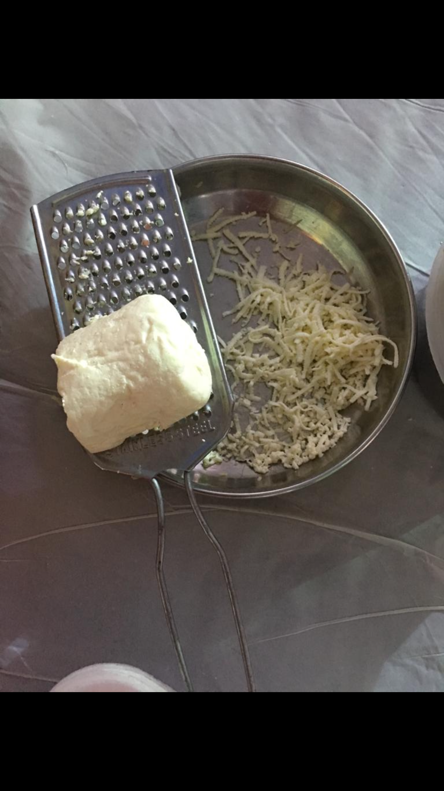
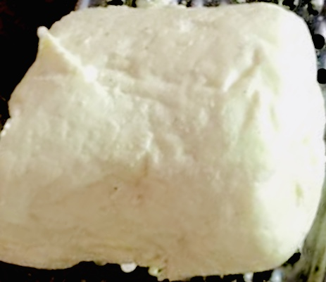

<
CHEESE
HOMEMADE CHEESE
The process of making cheese at home is very simple & it's taste will be same as
mozzarella cheese which we get in the market. So let's begin!


- Preparation time=60 minutes
- Refrigeration time=3 hours
INGREDIENTS FOR CHEESE-
-> Raw milk -500ml
-> Salt -5gms
-> vinegar - 4 tbl spoon (60ml)
METHODS/STEPS-
- Take the amul 500 ml milk strickly raw milk in a vessel and keep it on low flame,u have to boil is for just 5 mins not more.
- After switching off the flame add vinegar and keep stirring it for 10 minutes.
- Now you can see that milk is curdled ,so now take a bowl keep strainer on it and keep a thin cloth in strainer.
- Now starin the curdled milk and by holding that cloth in your hand start removing excess of water from it.
- Now take two bowls half filled with water in one bowl fill full hot water and in other bowl fill chilled ice water.
- So now thw curd which is ther in the cloth remove it n deep it in hot water bowl for 2 minutes and keep stirring it slightly with the help of spoon.
- now after 2 minutes transfer it into chilled water bowl for 2 mins and again stir it and now with the help of your hands start removing water from it.
- Once you feel that now there is no water inside it ,again put that in hot water bowl and then in clod water.
- repeate that process for 8 to 10 times,and now you will observe that it is converting into an elastic Cheese.
- Once you are done with this process wrap your cheese into a plastic tightly and no air should ne there inside the wrap.
- now keep this cheese in Refrigerator for minimum 3 hours.
- So your cheese is ready!! now you can grate your cheese and see how elastic it is, similar to market cheese.
And the cheese is ready! Now it's time for you to go for it.
For more recipes, stay connected!